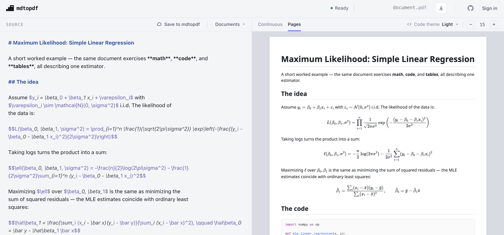
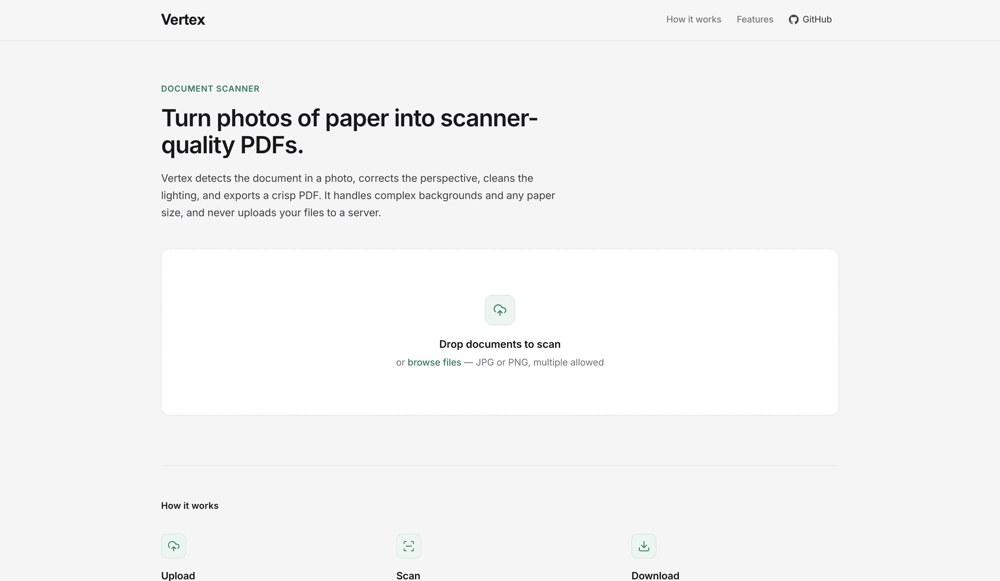

Selected Projects

InfraLens
A self-hosted monitoring utility and LLM diagnostic tool for Proxmox virtualized clusters. Features graph-based network mapping.

mdtopdf
Live web editor and CLI tool that converts Markdown to scanner-quality PDFs, complete with real-time page previews and LaTeX math rendering.

Vertex
Transforms raw document photos into scanner-quality PDFs using automated edge detection, perspective correction, and illumination normalization.